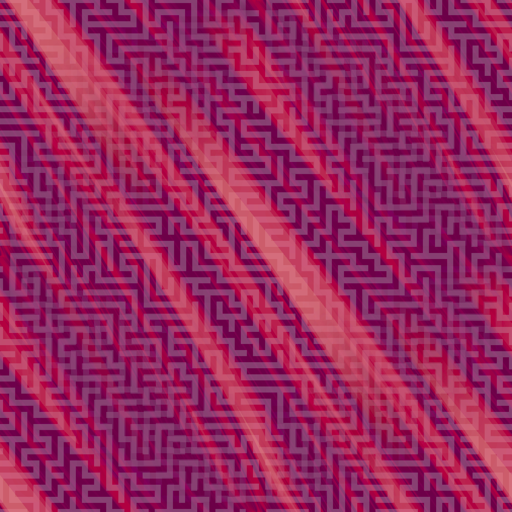

<!doctype html>
<html lang="en-US">

<head>
    <meta charset="utf-8" />
    <title>T4 bacteriophages</title>
</head>

<body onload="startDraw();">
    <canvas id="main-canvas" width="800" height="600"></canvas>
</body>

<script src="https://cdn.jsdelivr.net/npm/gl-matrix@3/gl-matrix.js"></script>
<script type='text/javascript' src='webgl-obj-loader.js'></script>
<script src="script.js"></script>

</html>
